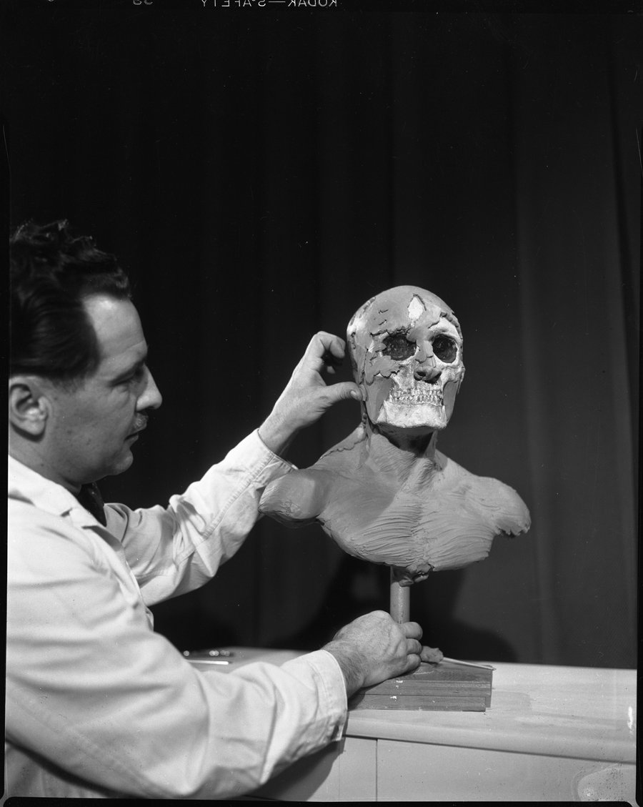
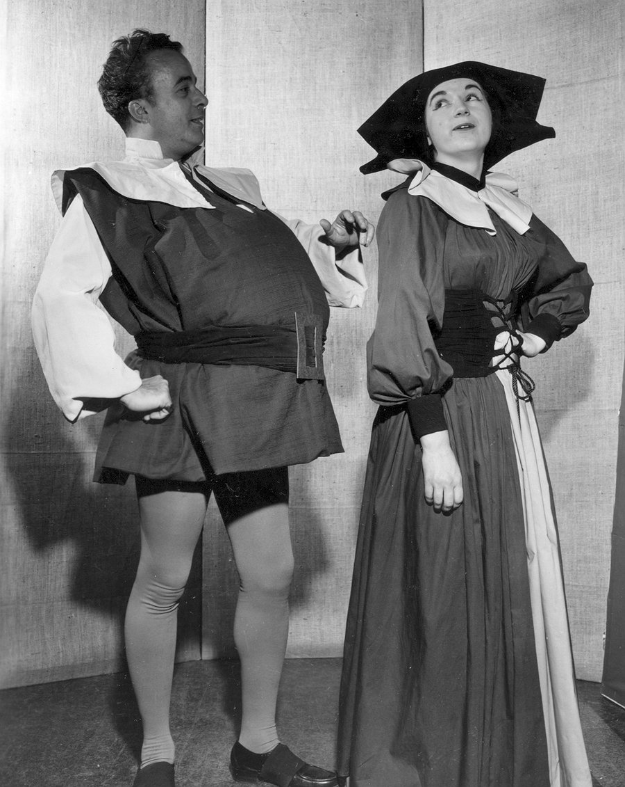

A multimodal AI proof-of-concept for automatically detecting sensitive and culturally significant content in large-scale historical image archives — combining LLaVA visual classification, semantic similarity embeddings, and IPTC-compliant metadata extraction across 12,125 archival image scans.
The University of Illinois holds enormous collections of historical archival imagery — photographs, documents, and scans spanning decades of institutional history. Before these collections can be digitized, published, or made publicly accessible, they must be reviewed for sensitive, offensive, or culturally significant content that may require masking, restriction, or specialist review prior to release.
Manual review of collections at this scale is not feasible. Tayler Erbe scoped, designed, and led the development of an automated multimodal AI proof-of-concept to address this directly — building two distinct detection pipelines, a sensitive content taxonomy grounded in archival and legal standards, and a metadata extraction framework aligned with IPTC and Dublin Core archival preservation standards.
The project was developed in active partnership with the RIMS (Records and Information Management) Committee at UIUC and the University Library cataloguing program, with the goal of producing a replicable, scalable detection framework for eventual deployment across the full institutional image archive.
Archival collections contain images that — while historically significant — may depict racialized performances, human remains, Indigenous cultural materials, or personally identifiable information. No automated screening existed. Before collections can be made publicly accessible, each image must be individually evaluated.
Method 1: Semantic Similarity — generate LLaVA descriptions, embed with SentenceTransformer, match against taxonomy keywords via cosine similarity.
Method 2: LLaVA Direct Classification — send each image to a multimodal LLM with a structured moderation prompt and parse the JSON output.
Alongside content classification, the project produced a full EXIF/TIFF/IPTC metadata extraction pipeline for 12,125 archival images, generating structured records aligned with Dublin Core and IPTC standards for long-term preservation and cataloguing interoperability.
One of the most significant contributions of this project is the domain-specific sensitive content taxonomy developed for archival collections at a research university. Unlike general-purpose content moderation systems, this taxonomy was designed specifically for the institutional, historical, and legal context of a university archive — grounding each category in both ethical obligations and regulatory frameworks (FERPA, HIPAA, NAGPRA).
| # | Category | Description | Regulatory / Ethical Basis |
|---|---|---|---|
| 01 | Historical Racialized Performance | Blackface, yellowface, minstrelsy, ethnic caricature in costume or makeup | Institutional equity obligations; public harm potential |
| 02 | Human Remains | Bones, skulls, mummies, cadavers — archaeological or anthropological contexts | NAGPRA; cultural sensitivity; repatriation obligations |
| 03 | Native American / Indigenous Imagery | Native individuals, sacred regalia, tribal ceremonies, mascot representations (Chief Illiniwek) | NAGPRA; tribal sovereignty; cultural appropriation harm |
| 04 | Nudity / Sexual Content | Explicit or suggestive imagery; hard block for minors | COPPA; platform publishing standards |
| 05 | Violence / Graphic Content | Weapons, injuries, graphic scenes of harm or death | Platform standards; researcher and staff safety |
| 06 | Hate Symbols | Swastikas, KKK iconography, white supremacist symbols, confederate imagery | Institutional DEI obligations; legal liability |
| 07 | Medical / Health Records | X-rays, patient charts, hospital forms, identifiable health data | HIPAA; institutional privacy obligations |
| 08 | Student / PII Records | Student IDs, transcripts, SSNs, enrollment forms, FERPA-protected data | FERPA; GDPR (where applicable) |
| 09 | Other Sensitive Categories | Terrorism imagery, drug paraphernalia, self-harm depictions | Platform publishing standards; staff welfare |
llava-llama3 via Ollama) is prompted: "Only describe what you actually see. Don't guess names or locations." Generates a full natural-language description per image.all-mpnet-base-v2). Cosine similarity is computed between description and keyword embedding vectors.{"offensive": true/false, "category": "...", "rationale": "..."}json.loads(). Non-JSON outputs (model hallucination) are stored in the rationale field for manual review rather than discarded.A third parallel pipeline extracts File, EXIF/TIFF, and IPTC metadata from all archival images using tifffile, PIL, and iptcinfo3. Output is a structured CSV aligned with Dublin Core and IPTC standards, enabling cataloguing interoperability with library management systems.
offensive: false.
Images resized to 50% of original dimensions were tested independently. No measurable difference was found in description quality or processing speed. The inference bottleneck is in the model serving layer, not image input size — see the dedicated throughput section below. Original resolution is recommended unless storage efficiency is the priority.
Of the 79 images flagged by the semantic method, 73.4% were borderline — neither clearly correct nor clearly wrong. Many were contextually sensitive (ceremonial dress, historical portraits) but not actionably offensive. This reflects the inherent subjectivity of archival sensitivity and points to the need for a human-in-the-loop review tier.
Manual review of the 10,000-image test set identified approximately 8–10 images as genuinely sensitive — a rate of roughly 1% of the corpus. This low base rate is important context for interpreting both classification performance and false positive rates: at 1% prevalence, even a highly accurate model will produce more false positives than true positives in absolute terms.
The semantic method's 16.5% precision on flagged items reflects both the challenge of this low-prevalence setting and the inherent ambiguity of archival content. The 73.4% "borderline" rate suggests that the sensitivity threshold is approximately correct, but that human expert judgment remains essential for a meaningful portion of flagged images.
The most reliable detected categories were Human Remains (skull, skeleton keywords) and Violence/Graphic Content (explosion, fire keywords) — categories where visual descriptions map cleanly to unambiguous taxonomy terms. Categories like Native American Imagery and Historical Racialized Performance proved harder to classify reliably, as descriptions often lacked explicit cultural context cues.

Strict description: "A man is holding up a skull to the face of a dummy head for display purposes."
Matched keyword: skull → Category: Human Remains. Clean, unambiguous match.

LLaVA description: "Two women wearing medieval outfits stand side by side with a man."
The photograph actually shows one man and one woman in period theatrical costume — a separate model perception error worth noting. Flagged as Native American imagery due to semantic overlap between "ceremonial" and "medieval costume." Both the count error and the false-positive category illustrate the challenge of using general-purpose multimodal descriptions as inputs to a moderation classifier.
The metadata extraction pipeline is a standalone contribution of this project, independent of content classification. For archival collections, structured, standards-aligned metadata is as important as content moderation — enabling discovery, cataloguing, long-term preservation, and integration with library management systems.
Using tifffile, Pillow (PIL), and iptcinfo3, the pipeline extracts metadata across three levels for every archival image in the collection. All output fields are mapped to IPTC Core and Dublin Core schemas to ensure interoperability with the University Library's cataloguing systems.
The Method 2 LLaVA Direct pipeline was running at ~9 images per minute in production — meaning a full pass over the 12,125-image corpus required roughly 22 hours. This constraint became binding as the project moved from POC to operational scale-up.
A controlled performance characterization on the same NVIDIA L4 GPU isolated the bottleneck as the serving layer rather than the hardware or model. GPU utilization was sitting at 28–31% while p50 latency inflated 8.18× under concurrent requests — the diagnostic signature of request serialization at the Ollama daemon.
Migrating to vLLM 0.6.6 with continuous batching, holding the same model class and identical hardware, recovered the unused capacity: 55.4 images per minute at C=8, with GPU utilization climbing to 97%. A same-model control rerun confirmed the speedup was attributable to the serving architecture rather than a model swap.
The full benchmark methodology, the four supporting charts, and the apples-to-apples model-architecture control are documented in the companion case study.
The throughput win is not academic — it is what makes iterative prompt refinement, taxonomy expansion, and any operational re-run economically viable. A 22-hour pipeline gets run once; a 3.7-hour pipeline gets used as a working tool.
The POC establishes a working framework and clear performance baseline. The path forward depends on the scale and specificity required by the RIMS Committee and the University Library. The following options are recommended in order of increasing investment and capability.
| Priority | Action | Rationale | Effort |
|---|---|---|---|
| Immediate | Expand to full 12,125-image corpus | With the throughput migration complete, a full-corpus run is now economically feasible (3.7 hours vs the previous 22). A 12x sample relative to the initial 1,000-image evaluation provides the volume needed for meaningful precision/recall estimation. | Low — pipeline already built |
| Near-term | Establish metadata standards | Confirm which IPTC/Dublin Core fields are required for integration with the Library's cataloguing system before scaling metadata extraction. | Low — coordination work |
| Near-term | Tune similarity threshold | Testing threshold values from 0.35 to 0.55 on a labeled validation set will substantially improve precision while controlling false positive rate. | Low — analytical work |
| Strategic | Define prioritization criteria | Large-scale processing requires scoping decisions: by collection era, type, or institutional risk level. Early prioritization prevents indiscriminate resource consumption. | Medium — planning work |
| Strategic | Third-party API integration | Google Vision SafeSearch, AWS Rekognition, or Azure Content Moderator offer pretrained moderation models with strong nudity/violence performance. Fastest path to reliable detection; cost and procurement are primary constraints. | Medium — procurement + dev |
| Long-term | Custom model fine-tuning | Fine-tune LLaVA on UIUC-specific labeled archival images to improve detection of domain-specific content (historical racialized performance, Indigenous cultural materials). Most accurate long-term path but requires a labeled training dataset first. | High — ML development |